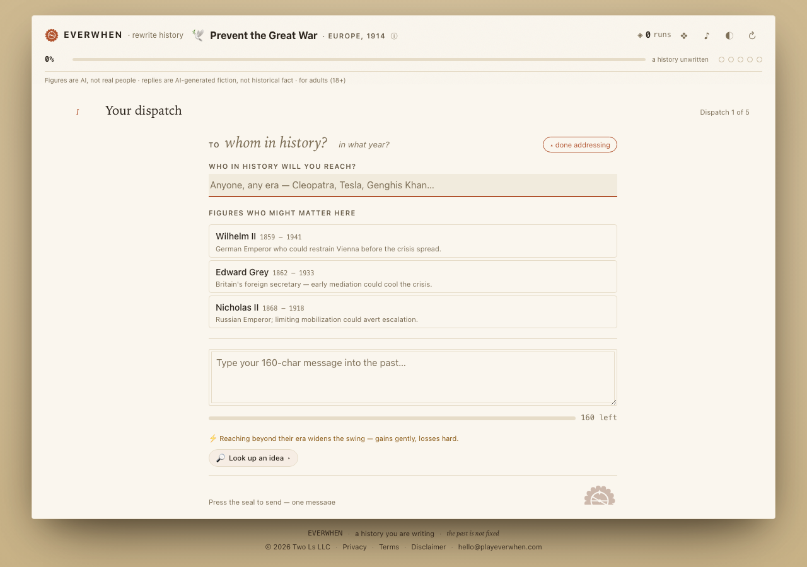
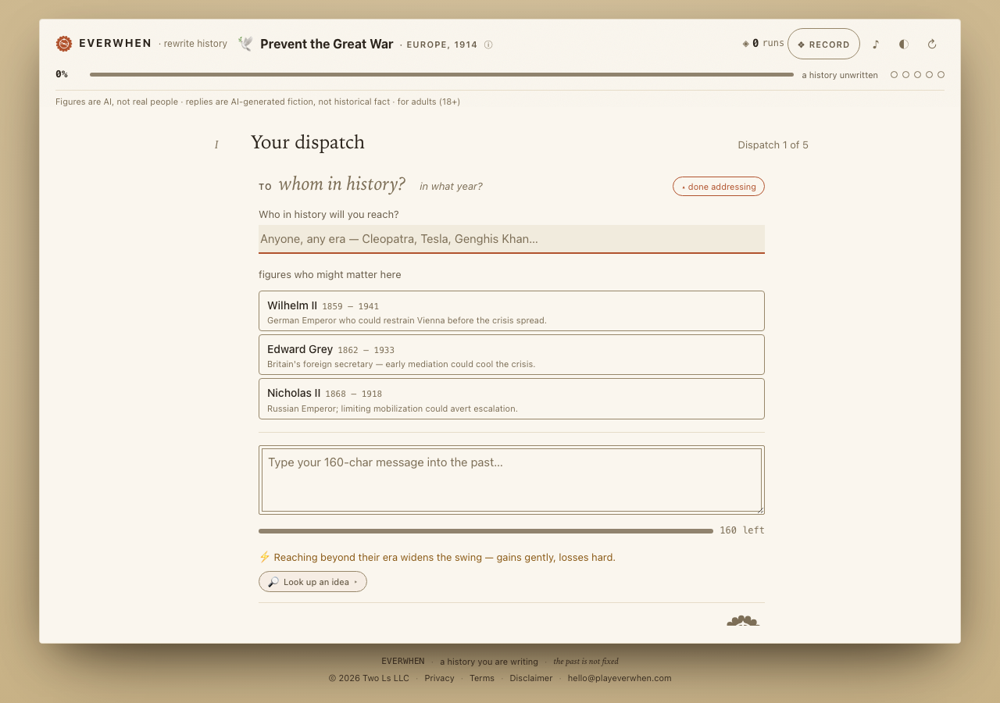
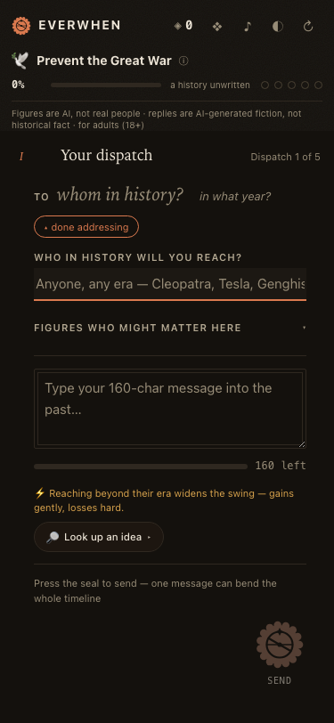
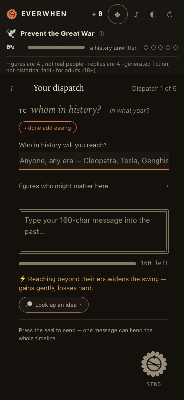
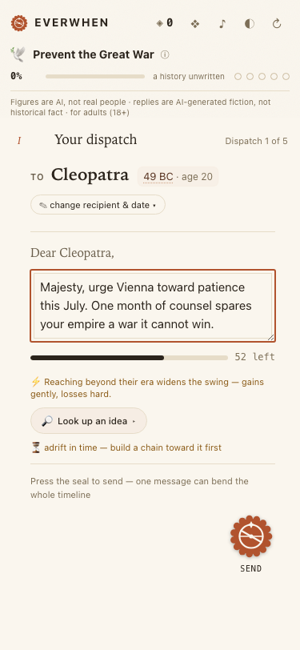
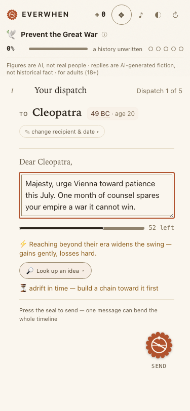
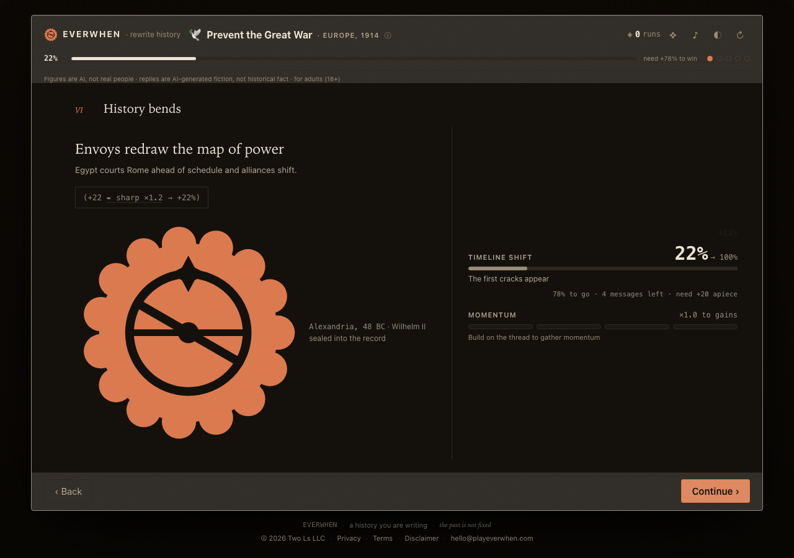
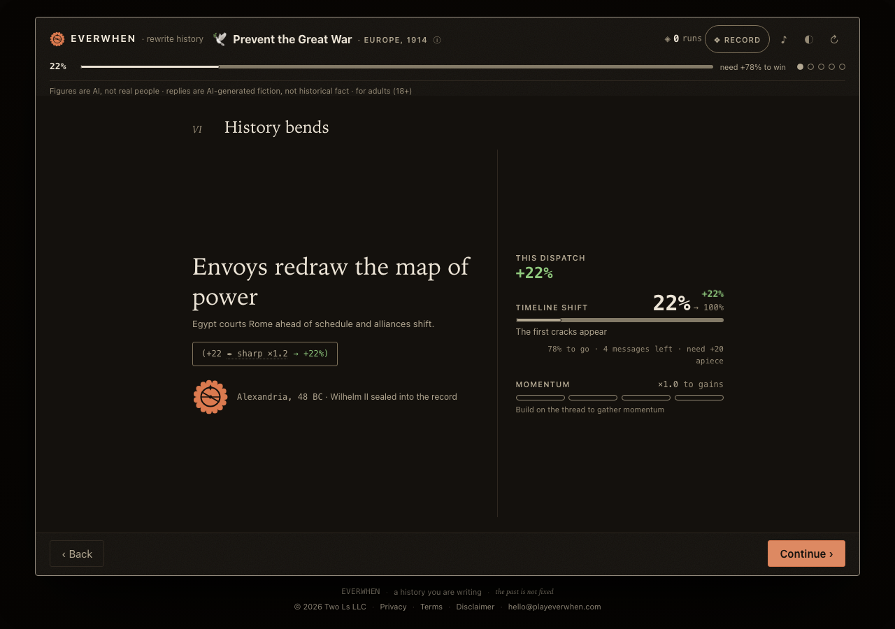

Everwhen PR #351 — before / after
Ten of 88 captured pairs · before = base commit 558a2c2, after = design/visual-contrast-refinement · code-level reading
The climax — "History bends" · 375 dark
The turn's swing now has a persistent, valence-inked statement ("THIS DISPATCH +22%"); the equation reads in real ink with a sign-classed result; the stamp is a deliberate hero instead of an accident; the gauges have visible grounds.


The Record overlay · 375 dark
Before: a viewport-sized seal buries the Spine and Chronicle (a CSS specificity tie plus a dev-mode multi-root fallthrough bug). After: a 26px header seal, the spine with its valence dot, readable reads.


The scoreboard — fresh dispatch · 1280 light
Progress track and pips now have a visible denominator; the record toggle is a labeled pill; interactive boundaries use the new edge ink; the disabled seal is flat inert wax, not a ghost.


Fresh dispatch · 375 dark


Dispatch ready to send · 375 light


The dice of fate · 1280 light
The verdict speaks at display scale and self-reconciles (12 ✒+2 → 14 · Success); the struck legend band lights while the rest recede; the die is centerpiece-sized on its own leaf.


The climax · 1280 dark


Mission select, a crusade chosen · 1280 light
Selection was a 1.1:1 tint and a 1.8:1 hollow ring; it is now a 3px terracotta rule, a warm accent wash, and 2px rings on the unchosen.


The sending — held breath · 375 dark


Defeat · 375 dark
The seal that failed to take: cold faint wax, no glow; the final percentage in the new blood-red bad ink, readable at 5:1.